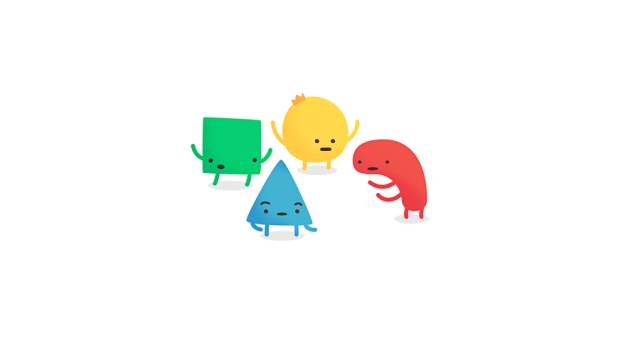

冒刺日常 | 记二O一七年七月二日晚的一场辩论
Yellow
酷儿论坛
2017-07-03
酷儿论坛

motss2002
杭州酷儿论坛（motss.info）致力于为杭州及周边地区学生性少数人群提供一个多元、健康、平等的环境，促进自我认同和社会认可。


瓜瓜的一位好朋友大侦探傅梨子，在朋友圈发了一条关于同性恋的动态，并就此和Ta的朋友们展开了一场激烈的辩论。现在，Ta将这场辩论的过程整理了下来，并和大家一起分享。如果大家也想加入这场辩论，或者有什么想说的话都欢迎在留言区评论哦。
本文内容较多，可读性较低，但内含一些有趣的观点。
起因是我发了一条这样的朋友圈：
“今晚聊得high，来和朋友们讨论一个新的话题。现在很多论调喜欢说“我既不支持也不反对同性恋，但不希望他在电视或其他媒介上进行宣传”。撸撸这个逻辑。首先，你认为同性恋是怎样产生的？如果你不知道，那我告诉你哦，同性恋是天生的，是由基因决定的。这个世界上存在一定比例的同性恋，就像这个世界存在花朵、小溪、树林一样，是一个客观事实。你会说“我既不支持也不反对世界上存在花朵”吗？应该不会吧。反对同性恋进行宣传，理由一般是“怕误导青少年儿童”。首先重复，同性恋是天生的，第二，即使青春期男孩女孩被误导，真的那么可怕吗？因为觉得很酷所以吸烟、喝酒、纹身、堕胎，大家都习以为常，探索自己的性向又会是很低级的错吗？
还有一种繁殖论“如果大家都去搞同性恋，人口出生率会降低，地球要灭亡”。首先，不让同性恋结婚并不会把同性恋变成异性恋，不能繁殖的还是不能繁殖。且同性恋占比远小于异性恋。此外，想让这部分同性恋人口繁殖，有几种办法？我能想到的暂时只有以下几种：第一、骗婚（形婚并不能带来小孩）。毫无疑问这是不对的，有很大社会危害的。第二、领养或代孕，看过美剧摩登家庭的朋友应该知道，这在美国算是比较普遍的一种方式。但选择领养和代孕，和同性恋结婚并不互相矛盾，反而有了婚姻对小孩的养育会有更正面的影响。所以，我不认为反对同性恋或制止同性恋结婚能够提高地球的生育率。
希望大家在评论里提出一些反对同性恋、反对同性恋宣传、反对同性恋婚姻的理由，我会努力反驳你们的！”（这也是我的论点一）
得到了朋友们的热烈回应，以下为内容摘录（我的回复为绿色，代号Y）。

首先是W同学：
W：
"如果同性恋真的是天生的，我一点意见都没，但如果这个条件不成立我会反对同性恋宣传别的不反对。。我既不支持也不反对，是指我自己无法接受但不排斥别人这么做，如果你认为这是支持的话就理解成支持吧"
"并且现在同性性行为是艾滋病等疾病传播的主要途径，要实现你说的得先解决这个问题"
Y：
“我不认为你这样是支持哦，我认为你这样是反对。对同性恋“不支持也不反对”，这是一个病句。表达“不支持”的前提是如果对某种事物施加“支持”的影响，就会改变其现状。但性取向不管你支不支持，在人群中的比例都是恒定的，所以是无效表态。如果“不支持”指的是同性恋平权运动，那么不支持本身就已经等于反对了。所以根本不存在“不支持也不反对”的状态。”
“再说同性恋艾滋的问题。我希望看到具体的数据来证明“同性恋群体中艾滋病患者比例高于异性恋”。“
此处Z同学加入讨论
Z：
“跟同性恋有什么关系，是滥交好吗”
W：
"这个比例是有的，之前G20排节目的时候了解到的，G20报告剧节目给的数据如果有误的话那中国在艾滋病防治这块的影响力将会大打折扣，中国不会拿自己的国际影响力开玩笑。。总结起来还是按照我现有的知识储备，不会支持同性恋，同样的我也想知道同性恋是由基因决定这一点的根据在哪"
"补充一下，是同性性行为比例高不是同性恋比例高"
"有没有关系我说了不算，起码说明了同性性行为的安全措施做的不到位"
Y：
“因为同性性行为容易感染艾滋而不支持同性恋，就好像因为吃荔枝容易被核噎死而制止大家吃荔枝一样是荒谬的。应该做的难道不是让同性恋性行为提高安全措施吗？就像让大家吃荔枝要注意吐核一样。”
此处C同学加入讨论
C：
"FucM基因 ，XQ28和Wnt-4基因，Sphinx（斯芬克斯）基因，统计数据认为这些可能是同性恋诱导基因。我觉得不反对已经很好了，经历会改变看法，所有人都有不同的立场和意见，欢迎多探讨"
W：
"我的意思是一个国家要通过同性恋婚姻必须要解决好安全问题，我只是从安全角度说明现在通过还为时过早，别无他意"
Y：
“可是目前我看到国家对同性恋的态度是“以堵为主”，并不认为这样的做法可以提高同性性交的安全性，反而使其更加隐蔽且失控。毕竟公园厕所肯定是比家里大床要脏的。”
W：
"国家目前的做法不在我讨论范畴之内
我也不认为通过同性恋婚姻就能解决问题"
Y：
“你堵起来怎么解决安全问题？怎么解决社会稳定问题？请问除同性恋婚姻还有什么更好的办法？”
W：
“我认为问题出在目前对性的教育过多的回避才导致的安全问题，在我看来安全问题解决不了你拿什么去和更多人交代说同性恋婚姻是可以被接受的。。如果你从指定相关条例角度来考虑的话，就算它是正确的但是要戏破坏稳定为代价那还是不要的好。。所以我认为不先解决安全问题没法继续推进”
Y：
“这就是我们认知矛盾的地方。我认为只有在阳光下推进才能真的解决艾滋问题。而你认为安全问题解决不了，我们先捂起来。上一个像艾滋病一样主要传播途径包含性行为的不治之症是梅毒。梅毒螺旋体比HIV厉害得多，它疯狂肆虐了四五百年，直到青霉素被发现。然而那时的人还没学会甩锅，如今艾滋病的锅都甩给男同性恋了，其实大家都会因为性行为得病，我的想法是要病前预防病后治疗，当局的想法是“不准谈论同性恋和艾滋病，我们国家不存在这些””
此处Z同学继续加入讨论
Z：
“有趣了 les艾滋率低于异性恋低于gay 按你的逻辑是要支持les咯”
W：
"按我的逻辑，如果性行为是天生的，加上les足够安全，那现阶段最多也就是具备通过les婚姻的条件。。我也不知道我在接受同性恋是天生的这一设定后会怎么想，但接受前我会反对的"（有趣的想法）
“你又扯到当局的想法来了，当局的想法我不想谈。。重点不就应该解决认知的矛盾吗？要改变教育现状才能让更多人支持同性恋，至少多数人不支持是无法推进的。。但如果能改变教育现状，安全问题也能解决一大半了吧。。”
Y：
“可是你的想法和当局的想法是一致的，不能不谈啊。你认为要改变“教育现状”，增加青少年性安全教育？那不就是变相的宣传同性恋？还是在青少年群体中宣传同性恋诶。以目前这种淫秽色情同性恋都是毒药的氛围，我觉得这太难做到了。如果这都能做到，本身就是一种巨大的推进，我也是非常开心了。”
W：
"首先要说明两点，一是中国网络视听节目服务协会最多到广电总局，用通则代表当局的观点是以偏概全。。二是被认为淫秽色情的是同性恋性行为而不一定是同性恋。。然后阻碍教育现状改变的不是当局是民众。。另外对宣传同性恋的定义我觉得你我之间可能存在认识的差别。。"
Y：
“广电总局不能代表当局吗？电视上不能播，图书出版物不能写，网络视听已经差不多是最后一道防线，一纸禁令，瓦解。淫秽色情的是同性恋性行为？请问异性恋性行为淫秽色情吗？主流媒体上是异性恋性暗示多还是同性恋性暗示多？如果你指的通过教育不是通过教育告诉孩子们世界上有同性恋还有异性恋，不管你是哪种做爱都要带套不要跟陌生人约炮，我不太清楚还能说什么？”
“大多数人无法理解少数人的生存状况和诉求，这是正常的。但民主并不意味着少数服从多数，这是我相信这个世界的理由之一。”
W：
"我认为广电总局是不能代表当局的，这点不谈了，同性性行为和异性性行为放在影视里被认为色情有他的道理。。问题不是出在淫秽色情上面而是出现在不正常这三个字上。。我也不认同少数服从多数是民主，但事实是不得不少数服从多数，如果哪天同性恋是天生的这点得到了多数人的认同我相信问题就好解决很多了。。我只是来表个态也不求自己的观点正确，放过我吧我要吃饭了o(╯□╰)o"
Y：
“广电总局、体育总局、教育总局，包括税务总局、食药监总局等，代表的不就是一个“当 局”吗？如果你是因为少数服从多数这一点而选择抵制同性婚姻，我希望能说服你，这样我们这个“少数”就又多了一个人啦。快点吃饭吧～”
W：
“我一开始的态度就很明确了不抵制同性婚姻，结束吧。。”
接下来是这一阶段一些较为精短的讨论
首先是Q
Q：
“提倡理性健康的宣传 然而在活动中也接触过一些觉得自己是lgbt人群而把功劳往自己身上揽，不愿意听别人想法的人。他们的宣传我绝不认为是有益的。而当别人提出意见时，他们会以我是性少数群体，你不同意我你就是歧视我为由，很轻易的引导舆论。 我们都是平等的人，谁都没有理由因自己的喜好不一样而有优越感”
Y：
“这样的人，一部分和亚裔、女性一样，是一种在长期压抑环境中形成的“矫枉过正”，主动提及自己的优点以消解歧视，是内心非常脆弱的表现。另一部分可能是天生的性格原因，这样的人在异性恋中也广泛存在，比如拧不开盖子、不想做体力活，动用自己性别优势的女生。存在有问题的人并不是否定一个群体的理由。”
第二个是ZZ
ZZ：
“不反对同性恋，不反对同性恋婚姻，也不反对正常的宣传。只反对针对同性恋的炒作，利用基腐来吸引眼球，一堆和同性恋并不沾边的人，为了蹭热度故意做出各种夸张的行为，不止令人恶心，也影响正常同性恋的的对外形象，同性恋只是性取向不同，并不是变态和女装癖。”
Y：
“异性恋有炒作吗？两个不相关的男女拍暧昧照片有吗？另，女装癖是性少数的一种，不仅存在于同性恋中。”
“另，“影响同性恋的对外形象”，我还蛮好奇这个世界期待着什么样的同性恋形象。可能期待同性恋者都是行业顶尖、有审美、纳税、爱国、彬彬有礼。但事实并不是这样的呀。就像异性恋中有loser一样，同性恋中形象不那么正面的人或事。但我们，不能因为吃荔枝容易被核噎死而制止大家吃荔枝呀。”
第三个是L
L：
“看了一下…有一个观点我不是特别认同，至少在论证上是有问题的没有办法说服我，你说同性恋是天生的就想花儿树木什么的一样，那么有的男人天生多了一条y染色体，天生具有暴力倾向，比如希特勒，这个时候你也会持有相同的态度么…所以这点无法说服我”
Y：
“首先同性恋在人群中的比例肯定是要高于两条y染色体的人的。其次，对于两条y染色体的人，你认为应该怎么办？一出生就杀死他吗？直面自身的缺陷，难道不也是人类本身一种令人动容的特质吗。”
L：
“对呀我不会对他报以歧视呀，仅以y染色体为例我们就应该更好的引导这样的人，避免被诱导对吧。再以同性恋为例，大家报以的不支持不反对的态度是很正常的吧。并不是你说的就是“不支持”嘛。此外同性恋我承认不像y染色体人一样 一旦诱导可能造成危害，但目前国家的政策确实偏向于不支持，稍反对吧，这也就是说，你想成为一个同性恋者，你只需要说服双方父母就可以了，并不是成为同性恋就要负民事或刑事责任呀。”
Y：
“可现状是，大部分人认为同性恋是丑恶的，是abnormal的。他们在生活与工作环境中受到了严重的歧视和打压。同性恋者写的书不能出版，同性恋的故事不能播放。即使希特勒，你也还是可以在电视里看到他的吧？”
L：
“但是绝没有电视节目或电影是宣扬赞美希特勒的吧，都是抨击抵制或类似的呀，你希望同性恋以这样的方式出现在电视里么”
Y：
“不是要求赞美和歌颂，而是正常的“表现”和“表达”。”
讨论进行到这里，有一位同学提出了“同性恋真的是天生的吗”的疑问，我觉得完全认为基因决定性向可能是不太妥当的说法，生物课告诉我们人的外在表现都是由基因和后天环境共同决定的。于是我继续查阅了资料，发现了在去年出版的《演化心理科学百科全书》的“同性性行为的演化”一节，基本代表了演化心理学界对这个问题的最新认识。
1. 同性性行为毫无疑问有遗传基础，双生子研究表明，男同的遗传度为30%（也即这一行为有30%是遗传决定的），女同的遗传度为60%。
2. 同性性行为在灵长目的类人猿这一支中得到了很大发展。
3. 以前，演化心理学曾经针对同性性行为的演化优势提出了很多假说，但这些假说大都难于验证，而且没有任何一个假说能解释所有的同性性行为，特别是如果考虑到同性取向还有很大程度由环境决定的话。
4. 目前，比较稳妥的看法是，同性取向和异性取向不是完全对立的二值特征，事实上，性取向是许多基因在环境中共同作用的结果，由此表现为一个连续而渐变的性取向谱系，极端同性恋和极端异性恋者在社会中都是少数，大多数人是同性取向和异性取向不同程度的混合。从演化的角度来讲，这说明极端同性取向和极端异性取向都会损害生物的适应度，二者的混合才是最优解。
在这些认识基础之上，我个人的观点是：
现在人类社会已经是一个高度依赖于文化建构的社会。文化建构对自然人性的一大颠覆，就是必须把很多模糊的行为法则明确地规定下来，这种“一刀切”虽然方便了社会管理，却因为不得不强行矫正原本模糊的人性，而同时造成了很多副作用。
这尤其鲜明地体现在婚姻制度上：人类的天性虽然的确倾向于一夫一妻制，但对其他各种变体（特别是一夫多妻变体）也都能适应，对不以繁殖为目的的性行动（不管同性还是异性）也广泛适应。现代中国的婚姻制度明确规定婚姻只能是两个异性成年人的结合，对于占社会大部分人口的双性恋者来说，这就等于从小就强迫他们消除性取向的模糊性，必须明确自己是同性还是异性。打个物理学的比方，这相当于强迫一个人去观察处于不确定状态的“薛定谔猫”，最后猫的状态只能“坍缩”到活或死的二值状态中，要么活，要么死，没有别的可能。可以理解，尽管大部分人会“坍缩”到异性取向一端，但也总会有小部分人“坍缩”到同性取向一端。有些反同性恋的学者极力论证同性恋是社会建构。这话说得没错，但应该这么理解：恰恰正是一夫一妻的婚姻制，加速了同性恋成为社会建构。
因此，我不同意现在对同性民事结合关系仍然抱以看似公允的“不支持、不反对”态度。如果要坚持以一夫一妻制为婚姻制度主体，那就应该对由此强迫建构的同性恋者给予必要的补偿，允许一对一的同性民事结合关系。
我将这部分内容作为我的第二个论点发在了朋友圈。
今天早上发生了新一波的讨论。
引出S同学
S：
"不支持不反对但是不希望宣传，潜在意思应该是承认先天遗传同性恋但是反对社会因素形成同性恋的意思吧。对于那一部分先天遗传因素产生的同性恋，其实并没有什么分歧，而且不反对不支持不是最适应其自由发展的状态吗。对于后天社会因素产生同性恋:
1.产生背景来说，不希望青少年做不好的探索是中国式大家长的普遍想法，择业要选公务员嫁人应该要有房，因为不能明确有多少人因此功成名就或者后悔所以不能用最客观的结果论来说明这是否有错，所以也不能论证，青少年是否有必要刻意进行自己是否是同性恋的探索，当然我也不知道同性恋发现自己是同性恋究竟是自然而然还是刻意探索？。
2.必要性来说，如果一件事有必要在公共媒介上传播，应该是有正确价值符合社会需求发展趋势的。如果媒介宣传的是同性恋没有错不应该受到歧视，我同意，如果媒介体现的是同性恋很酷并且它的宣传力度高于异性恋，我不同意。也就是说，我只接受同性恋站在弱势群体角度要求平等的宣传口号，希望各种传播媒介能够负责任不要做过头。同时对于同性恋很如果大家都能做到不反对不支持我反而觉得这是最好的默认状态，正是因为大家觉得同性恋是不一样的所以才要刻意打着重符号。
3.为什么性取向都能模糊，但是对一件事情的看法或者价值观就不能模糊？会不会有存在双标现象？"
Y：
"对同性恋“不支持也不反对”，这是一个病句。表达“不支持”的前提是如果对某种事物施加“支持”的影响，就会改变其现状。但性取向不管你支不支持，在人群中的比例都是恒定的，所以是无效表态。如果“不支持”指的是同性恋平权运动，那么不支持本身就已经等于反对了。所以根本不存在“不支持也不反对”的状态。
另，FucM基因 ，XQ28和Wnt-4基因，Sphinx（斯芬克斯）基因，统计数据认为这些可能是同性恋诱导基因。
1.中国家长对孩子的很多期待在我看来本身就是荒谬的、是错的，探索性向是没有错的。
2.“如果一件事在公共媒介上传播，应该是有正确价值符合社会发展需求”更荒谬。且不说传世的文学作品几乎全都在讨论人性和社会的黑暗面，就说一个进的，抑郁症、艾滋病，这些难道都不能出现在电视吗？不表达就代表人群中不存在这些人吗？直面人性的不完美之处，直面性少数的存在，难道不是人类本身的伟大之处吗？政府的抵制的打压是一个指向，让生活中歧视同性恋的人更加肆无忌惮。
3.目前来讲男同性性行为比异性性行为更容易感染艾滋，如果不积极引导宣传，提醒大家注意安全措施，而是藏着捂着，难道不会更隐蔽且失控吗？人群中同性恋的比例是恒定的，你不让他们堂堂正正结婚，把他们逼回公园厕所吗？"
"在历史的长河中，没有哪一次革命和斗争是靠礼让作揖完成的。像一艘船，如果所有人都站在中立和反对方，是不会前进的，激进的宣传是必然的。如果电视能宣传异性恋很酷，那为什么不能宣传同性恋很酷？性取向不存在三六九等。"
S：
"对于并没有学过这个那个理论的一般中庸中国人而言，不支持不反对体现的是一种默认。你是同性恋，哦，好的吧，我不做评价。如果同性恋的基数是确定的为什么有些人因为在异性那里感情受挫就转向同性恋呢？而且同性恋宣传对于青少年的潜意识影响是不可忽略的吧？
1.对于中国式家长的教育方式我不做好坏评价，只是我没有办法相信当自己身为家长的时候会不对孩子的人生进行干涉或者期待
2.多元讨论的过程是对的，文学表达的方式可以是多元的，但是如果必须展示明确的结果的话，那么反方向输出的媒体有义务保证你说的肯定句是对的。或者你改口说疑问句。
3.没有反对同性恋婚姻。就像我说的，提倡平等是合理的，但是不希望给同性恋过多的着重号。请把握这个度。
4.为什么看法和价值观的多元比性取向的多元更加可怕"
"如果大多数人对于同性恋都能，你是同性恋？哦，好的吧，我不做评价。那么也就够了吧。媒体的确可以开始宣传艾滋病而非性取向了。当然我觉得艾滋病的宣传也没有停下来过"
Y：
“1.我们是两个同龄人在探讨同性婚姻是否可行，不要习惯性地拿出上一辈或者家长来做挡箭牌，要的是自己的观点，这个国家的现在已经腐朽，不可能实现这些，但是如果有一天你变成了家长，变成了决策者，你会怎么做。
2.多元的价值观存在于特定事物中，但有些事情是不存在“多元价值观的”，比如“天赋人权”，比如“在二维空间内两点之间直线最短”。如果文学作品说出的每一句话都需要是正确的，谁来进行探讨，要探讨的不就是还没有被接受谁是正确谁是错误的内容吗？
3.这个国家，是不给同性恋着重号了吗？同性恋群体是在诉求赞美和歌颂吗？不是的，他们无法进行基本的“表现”和“表达”。
4.现在的情况是什么，媒体宣传的是“同性恋滥交”“同性恋艾滋”，在一个这样的环境中，同性恋会停止受到歧视吗？”
“人拥有在生理基础之外的价值，那种超越物质性的选择自由。我喜欢吃青菜，我每天都吃青菜，就算全世界都吃胡萝卜，我也要顿顿都吃青菜。我的选择有着无可辩驳的合理性，因为它面朝自由。正是自由使人类成为人类。即使你不告诉一个孩子你可以吃青菜，让他每顿吃胡萝卜，他终究也会发现，自己并不爱吃胡萝卜啊。
因此，LGBT的合理性在于自由，在于人性的本质，而绝不在于天生与否。对LGBT的承认绝不是无奈地妥协，而应该是人类对彼此自由天性的相互尊重。”（此为我的第三个论点）
S：
“1.作为家长给孩子指导是合理且必须的，我身为家长依旧会给孩子我认为正确的观念。就是我不希望你是同性恋，但是如果你是同性恋我依旧爱你。
2.大概我不知道你所谓的支持究竟是一种怎么样的程度。就我而言，我只能做到不歧视的默认。如果你认为支持同性婚姻是支持的话，你可以把我认为是支持的那一边。我也不知道所谓反对是指的什么程度，至少我不希望我的孩子是同性恋。
3.自媒体可以是讨论和不确定的，但是媒体如果不能确定，那么请做一个客观的观察和表达者。
4.如果非要强调支持同性恋，请打上要求平等的前提。就像公交车让座给老弱妇孺不代表老弱妇孺对于公交车的使用权高于青壮年。对于没有明确三观的青少年而言，请保证表达的完整，和程度的把握。
5.我不知道同性恋和异性恋哪者乱交或者不带套行为比例更高所以不对艾滋病做评价。”
Y：
“你觉得国内媒体客观吗？外交部说中英联合声明是历史文件不具有现实意义，简直就是笑话！”
S：
“国家利益高于一切 ”
Y：
“我理解不希望孩子是同性恋，我也不希望孩子是同性恋，不是因为我不喜欢同性恋，而是因为这个世界上同性恋生活地实在是太辛苦。但如果我的孩子真的是同性恋，我会给他一样的爱，也会为了保护他奋斗终生。”
S：
“我也不会给他保护，自己选的路自己走，毕竟全家都没有同性恋基因的样子😒”
最后是X同学
X：
"我就是你说的那种不支持不反对同性恋的人，站在男性的角度考虑，我对性取向为同性的人没有恶感，但是前提是不要打扰到我，所以，我不反对同性恋，不反对同性恋婚姻。但是，我反对宣传，反对粉饰美化同性恋的行为，这样子的行为我相信大多数性取向正常的人都会觉得不舒服。凭什么要因为少部分性取向的人要求我们全部人給他们让路，过好你自己的生活，不打扰不想干多好。"
"而且你说的性取向天生这个问题，我亲眼看见直男直女被掰弯过，这些还都是三观完善的成年人。那如果是青少年，没有自己完整三观的人，我想相当一部分人会被诱导吧。"
"你觉得你要替性少数群体追求平等，那没问题，但是请别伤害我们性大多数人的利益，世界上不是非黑即白，有类似于你这样极度支持的，也有像我朋友一样极度厌恶的，同样也有我这种不喜欢不厌恶，混沌的中庸的人"
"你单方面得强调我们对他们的尊重，但是有没有想过，就是有很大一部分人无法接受，觉得这样子极度不舒服，那你铺天盖地得宣传之后，考虑或者说尊重这部分人的感受吗"
Y：
“因为那一部分人原本就是错的。为什么异性恋可以宣传可以炒作可以在公共场合亲亲抱抱而同性恋不可以？”
X：
“你为什么会觉得如果不喜欢不认可同性恋就是错的”
Y：
“人群中有比例恒定的同性恋，就是这个世界有花有草有太阳一样，是客观事实。你当然可以不认可这个世界的花，但我会认为你是错的。”
“又要重复这一段，关于“掰弯”：人拥有在生理基础之外的价值，那种超越物质性的选择自由。我喜欢吃青菜，我每天都吃青菜，就算全世界都吃胡萝卜，我也要顿顿都吃青菜。我的选择有着无可辩驳的合理性，因为它面朝自由。正是自由使人类成为人类。即使你不告诉一个孩子你可以吃青菜，让他每顿吃胡萝卜，他终究也会发现，自己并不爱吃胡萝卜啊。（此处请尝试理解被掰弯的孩子，他们本身就拥有同性恋诱导基因，又遇到了喜欢的青菜）
因此，LGBT的合理性在于自由，在于人性的本质，而绝不在于天生与否。对LGBT的承认绝不是无奈地妥协，而应该是人类对彼此自由天性的相互尊重。”
X：
“人群中有比例恒定的同性恋，就是这个世界有花有草有太阳一样，是客观事实。我认可这个世界认可这朵花，但是我就是不喜欢，比如它颜色不好看气味难闻，那你凭什么觉得这样就是错的”
“你喜欢吃鱼，并不代表所有人都喜欢吃鱼，无论你说什么鱼肉有营养鱼肉鲜嫩，但是不喜欢就是不喜欢，你为什么一定要不喜欢吃鱼的任说出理由然后再反驳掉”
Y：
“不是一种花，你这样的行为我认为是“我不喜欢猪笼草”差不多类似“我不喜欢同性恋中的壮熊”，是你自己的想法，但你不能因为不认可所有花，不能因此剥夺同性恋（包括壮熊）的表达空间。”
X：
"理由就是一个，我们是自由的，你喜欢吃鱼，我们不喜欢而已"
Y：
“不管你喜不喜欢吃鱼，这是你个人的选择，但鱼存在在这个世上。”
X：
“那有的人就是对花粉过敏怎么办”
Y：
"那你保护好自己不接触花，而不是要求铲掉世上所有的花。"
X：
”对，鱼就是存在这个世界上，但是如果一个人看见鱼就会呕吐起起皮疙瘩，你又干嘛一定要拿一条鱼在他眼前晃悠。一个人对花粉过敏，你为什么一定要把花粉弄得漫天都是。你觉得少部分人权益应该受到保障，但是不应该忽视大部分人，不能认为不吃鱼对花粉过敏就是错的“
”对，所以不要宣传，让花就在自己的世界里面好好传播，不要过来伤害那些对花粉过敏的人“
”吃鱼跟不吃鱼都是对的，对花粉过敏跟喜欢也都是对的，每个人都是自由的“
Y：
"LGBT群体有表达自由，且他们的表达并没有侵犯到他人的自由，理应被尊重。毕竟在这个时代里积极的自我表达是一种不可多得勇气和珍贵品质，民主的基石不就是个体意志的崛起吗？
当然你会说，他们到处游行，到处上镜，碍眼，抢风头，并以此为由说LGBT运动侵犯了你的领地。这其实更荒谬，他们的宣示行为发生在公共领域。每个人都有权利使用公共领域，觉得碍眼，你可以远远躲开。当然你也可以举个牌子，写上“我不喜欢同性恋”，混进人群，游行一圈儿。但这句话后面绝不能接一条”请你们离开这里"。因为前一句是你纯粹的个人的喜好，关乎你的意思自由，虽然令人不适，但应当依然被尊重。但后一句接入了宾语，你的表达里就涵盖了对他人行为的干涉。但干涉自由必须以自由为目的，由于LGBT的表达并没有实际上限制你的表达，那么如果你对他人的干涉不是为了减弱或免除他人对自己的行为和思想的禁制就是无理取闹和耍流氓。“
”自由永远都是限制自由的目的，我们把那些涉及他人的自由部分地让度出来交由规范来约束，其目的是保持绝对个人领域的不受侵犯。政治正确就是这样的规范，它从来不屑于绑架你的自由。有时候你觉得自己被“政治正确“胁迫，无法表达反对意见，那是因为你从一开始就把自由的矛头对准了自由本身。自由不是一种手段，自由是目的，而你却把自由变成你摧毁自由的工具，这必然违背了自由的本意而成为一种禁忌。“
（其实我能表达的在这边都已经表达完了，后面属于陪聊……）
X：
“我们之间的分歧从来不是性少数群体该不该游行之类的问题，而是该不该宣传以及不喜欢这部分群体的人到底对不对的问题”
此时上文中的S加入讨论：
S：
“BUG在于，如果身为大多数的异性恋中存在那一部分反对者，同性恋永远没有办法实现和异性恋一样的平等。所以你可以要求共存，但是支持者只存在要么依旧苟且要么继续激辩。
另一个BUG，反对者只是反对，不愿意激辩。"
Y：
“宣传是他们的自由，就像开放是花的自由”
“没有啦 激辩的反对者也是很多的～”
X：
“他们游行，希望获取自身权益的行为，我还是中立的观点。但是，性少数这类的性取向观点我不赞同大力宣传以及我认为不论认不认同性少数群体都是正确的”
Y：
"我尊重你的认为，虽然不是很清楚你说的大力宣传是什么程度，我希望你如果花粉过敏，可以保护自己离开一朵盛开的花，而不是禁止他盛开～"
X：
"花是不会长腿的，我不希望在家的时候有人闯进来捧这花告诉我说，来，你问问，这花可香了
花可以盛开，但是请不要有人带上它到处乱跑"
Y：
"公共场合不算“家”，电脑电视不算“家”哦～"
X：
"电脑电视机在家里，我不希望我在浏览某些网站的时候，满屏都是那种男男场景，这样会让我很不舒服"
"就像同性恋是天生的，厌恶讨厌同性恋耶很大一部分是天生的"
Y：
"。。。那我没话说了 互联网和电视都是公共领域啊"
"这肯定不是的 我身边有太多扭转的案例了"
X：
"你在宣传，在各种媒体上进行宣传，就是在以不同的形式入侵我们的生活，影响我们的判断，不然，你宣传是为了什么"
Y：
"不说了啊，无解了"
X：
"我身边还有好几个被掰弯的，或者说双"
"本来我们也就不可能说服对方，就是把自己的观点拿出来陈述辩论一下而已"
Y：
"掰弯的事我前面已经说得很清楚了。我的立论三点：一如果同性恋是天生的，举出了诱导基因，二如果同性恋是先天基因和后天环境共同造成的，详见演化心理学部分。三无论同性恋是不是先天的，人都应该有自由选择性取向的权利，详见对于“自由”探讨的两段。"
"另，我相信你打开电视电脑，异性恋的内容相较于同性恋绝对是碾压性的～只要你不特地去同志论坛参观或者看同志电影，我相信你要避开这些内容还是非常容易的～"
长按二维码向我转账
“”

受苹果公司新规定影响，微信 iOS 版的赞赏功能被关闭，可通过二维码转账支持公众号。
阅读
微信扫一扫
关注该公众号
关注该公众号
使用小程序